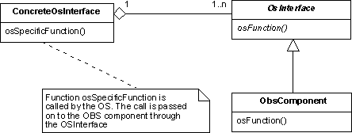

Operating System Interface Design Pattern
Intent
Decouple the OBS application from the operating system upon which it is running.
Based On
This is pattern is based on the proxy pattern of gamma et al.
Motivation
Most OBS applications run on top of an operating system. The operating system may be either a commercial operating system or a basic software layer provided by the manufacturer of the OBS computer. Given the potentially idiosyncratic character of the interface to the operating system, there is an interest in insulating the OBS application from the operating system.
This design pattern achieves this objective by using the proxy pattern. This means that it calls for access to the operating system services to be performed by specialized components characterized by application-independent abstract interfaces. The OBS application the can see the operating system only through these abstract interfaces and is thus protected by changes in the underlying operating system.Dictionary Entries
The following abstractions or domain-wide concepts are defined to support the implementation of this design pattern:
Structure
The basic idea behind this design pattern is to introduce an abstract coupling between the client - the OBS component that needs to access an operating system function - and the operating system. This is done by introducing an abstract interface that defines in an application-independent manner the access to the operating system. The interface is then implemented by concrete components that encapsulate the access to a particular operating system. A change in the operating system should only require a change in the concrete component but should have no impact on the rest of the OBS application.
An example of a typical operating system service that is required by most OBS applications is access to timing information. In the spirit of this design pattern, anObsClock interface could be introduced
that defines general timing services. This interface could then be
implemented by various components that construct the timing information
by using the services offered by a specific operating system.
Participants
Client:The OBS component that needs to access an operating system function. OSInterface:The abstract interface that declares application-indpendend operations to access the operating system service. ConcreteOSInterface:Component implementing (or derived from) OSInterfacethat implements an interface to a specific operating system.
Collaborations
The typical operational scenario for this design pattern is:
- A client that needs to access an OS function sends a request to a
ConcreteOSInterfacewhich it sees only as an instance of the generic interfaceOSInterface - The
ConcreteOSInterfaceexecutes the client's request by accessing the underlying operating system.
Consequences
- Different applications within the domain can be built upon different operating systems with minimal impact upon their implementation.
Applicability
This design pattern is useful when:
- Components in an application need to access the operating system.
- Several different operating systems are used within the target domain.
Implementation Issues
The interface to the operating system can be very complex encompassing several
categories of unrelated services. For this reason, it will normally be
advisable to introduce several OSInterface interfaces to
cover various subsets of OS services. As an example, consider the access
to timing information. Timing information is usually provided by a small
number of OS services. An abstract interface could be defined to characterize
these components. Applications would create components that implement
this interface and that act as "on-board clock components". Another
important example is the access to external units (sensors, actuators,
etc). This is usually performed through operating system calls that manage
the low-level interface to the unit. An abstract interface can then be
defined to characterize a generic unit and individual units are then
represented within an application by proxy components that implement
that interface.
This design pattern only addresses the case of the OBS component accessing
the OS services. However, sometimes it is the OBS that must call application
services. This is typically the case of the scheduler that calls operations
exposed by the application. The objective of decoupling the application from
the operating system can then be achieved by "reversing" the approach
proposed in the structure section of this design pattern. This
is illustrated in the class diagram below. The ConcreteOSInterface
is now a concrete component that is adapted to a specific OS and that
intercepts calls to the OBS, transforms them as required, and
passes them on to the OBS through the application-independent
abstract interface OSInterface

The ConcreteOSInterface components can normally be implemented as singletons.
OBS Framework Mapping
The implementation of this design pattern in the OBS Framework is supported by the following classes:
- OsInterfaceabstract interface -->
ObsClock
Sample Code
As a simple example, consider the case of providing access to timing information. Timing information normally originates in the operating system. Access to it from the OBS application could be done through an abstract interface of the following kind:
interface ObsClock {
unsigned int getTime();
void synchronize();
}
The ObsClock interface in this example plays the role of the OSInterface.
The definition of the interface assumes that time is represented as an unsigned integer.
The implement of method getTime is responsible for translating
the timing information provided by the underlying OS to the timing format
required by the application. Operation synhronize is useful if
several timing sources are present and if the OBS time needs to be periodically
synchronized to some other timing source.
Remarks
None
Author
A. Pasetti (P&P Software)
Last Modified
2003-05-17